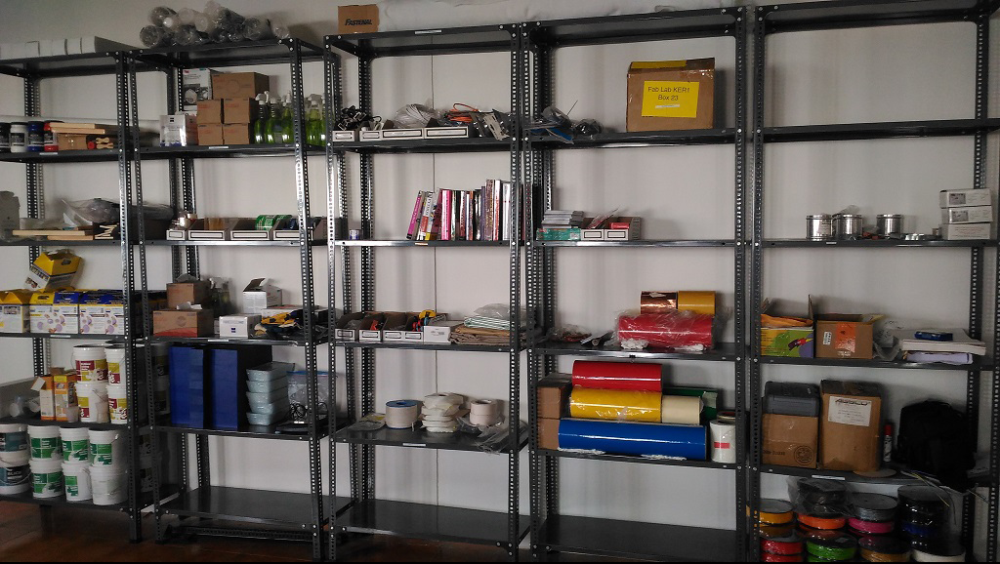

Week 1
Introduction
Day 2
Documentation
Date, Machine used, Material (thickness, type, color…), Settings (speeds, feed rates...), Results (what worked, what didn’t), Debugging, Assignment: Document what you do every day.Preparing Laptops and Lab Computers
Installations
Creating Backups
Backup data to USB
Backup data to Cloud
Install latest Ubuntu Desktop LTS (currently 14.04)
Learn how to install software using Ubuntu software center
How to install software using apt-get
How to compile software
How to install windows software using wine
Basic command line for ubuntu
Download and install all softwares and packages for fablab
“Terminal here” addon for Nautilus
$ sudo apt-get install nautilus-open-terminal
$ sudo nautilus -q
fab modules compiled version
The fab modules provide a set of software tools for personal fabrication, intended for use with machines common to fab labs.
It includes
Tools to design 2D and 3D objects
Functions to generate 2D and 3D toolpaths
GUIs workflow from design files to machine commands
Instructions in kokompe web site http://kokompe.cba.mit.edu/
kokopelli retro
Install dependencies from kokompe web site
Unzip the folder
Open folder in terminal
Download and Install QT.Run the following code
chmod a+x filename
./filename
Also install ..
inkscape
openscad
gimp
cura
Text editor
Day 3
Accounts
Create accounts
fablab.io account : https://www.fablabs.io/users/4692
fabcloud : git.fabcloud.io
github : http://mic20m.github.io/
dropbox :
flicker : yahoo
sketchfab : sketchfab.com/mic20m
Documenting Via Git(HUB)
Installing and configuring Git , for a first time user.
sudo apt-get install git
git config --global user.name "mic20m"
git config --global user.email mic20m@gmail.com
I had created mic20m.github.io repo , so for creating this page. One can create only one page and it should be in the format username.gihub.io
git clone https://github.com/mic20m/mic20m.github.io
Any changes made in the local repo has to be pushed to the online repo. So if its the addition of readme file
git add --all #an easy way to add files to the header.
git commit -m -q #-q represent a quiet commit , the summary is skipped.
git push -u origin master #pushing data to the branch master , authentication is required.
Creating and adding SSH Key
SSH Keys help in identifying machines holding local repo and hence help in skipping the prompt to enter account credentials".Go to the link for help.
ssh-keygen -t rsa -b 4096 -C "akshai.kannan@gmail.com" #generate new ssh key, click enter and then a passphrase.
eval "$(ssh-agent -s)" #start ssh agent
ssh-add ~/.ssh/id_rsa #add key to agent , authentication required.
sudo nano ~/.ssh/id_rsa.pub #use an editpr and copy the entire contents.
In the GitHub account settings , the copied key is to be added in the "Key" field in the Add SSH Key option
if clone with https - password and username
ssh - private key,public key
Day 4
Cleaning and inventory
clean fablab
